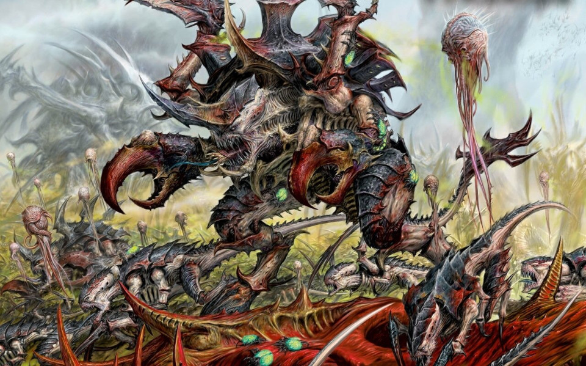
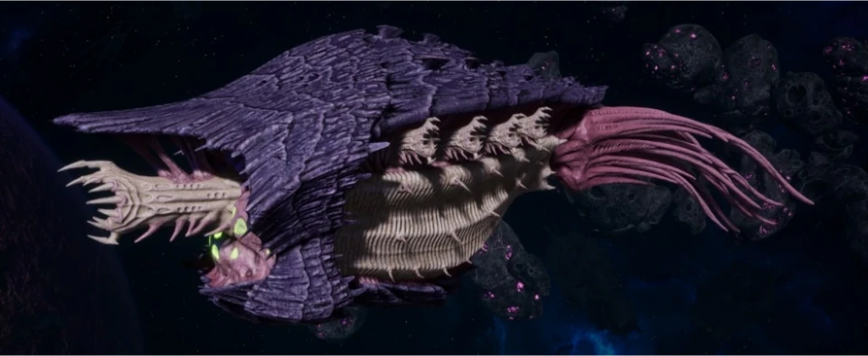
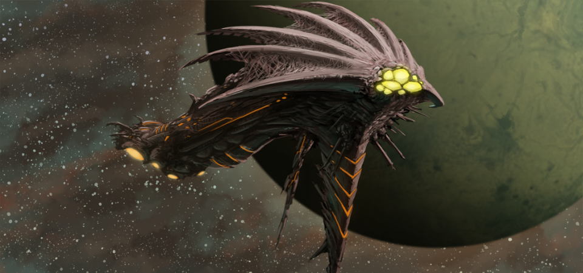
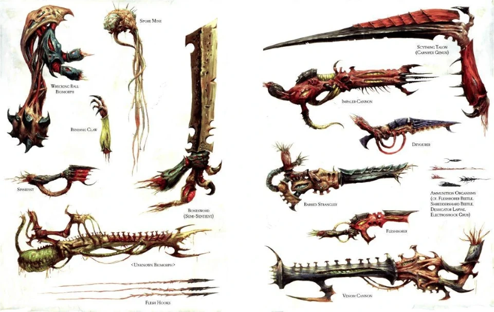
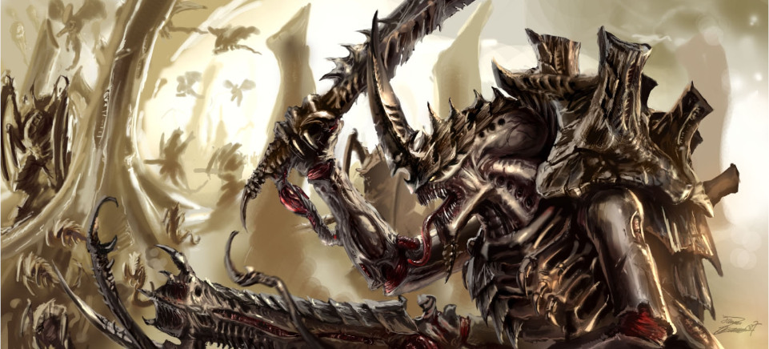

The Tyranids are an extragalatic (meaning from outside the Milky Way) insectoid race of intelligent life. The Tyranids consume everything in their path and often infest and then incorporate any life they find into themselves. They truly might be the most terrifying race found in Warhammer 40k and are truly the most alien to mankind.
All Tyranids possess a common psychic bond known as "the synapse" and this bond enables them to think, perceive, and act as a single great super organism.
Biology

A Tyranid
The biology of the Tyranids is unique in that it consists as many different bioformes that combine into a single biomass all working as one cohesive unit. They are able to experience evolution ona scale that no other race exepriences and have even developed space-flight not from machine but from evolved biological forms that can with stand spaceflight.
The Tyranids also actively infest other lifeforms and mutate them into something else entirely. This means that their biodiversity is quite large and they have many other "infested" races in their arsenal.
Hive Mind and Hive Fleets

A Tyranid Hive Ship
One of the most unique aspects of the Tyranids is the fact that they have a hive mind effectively making all of the Tyranids one collective force with a single will. It is considered a super organism that consideres all other life as prey that must be added to super organism.
Every thought and action, every spark of life in the Tyranid species is bound and interlinked into a single unfathomable conciousness, a great entity that stertches across hundreds of light years of space. And this mind is constantly adding organisms under its control and one day threatens to swallow the galaxy whole.
Tyranid hive fleets consist of millions of biomechanical craft each carrying soldiers that serve a specialised specific purpose. These massive hive fleets are controlled by one hive mind therefore their actions out on the battlefield go exactly according to its own plan with no confusion.
Shadow in the Warp

A Tyranid Ship Invading
The coming of a Tyranid fleet is preceeded by signs and disturbances in the warp that are intentionally caused by the Tyranid fleet. A psychic signal envlopes entire star systems and disrupts all forms of Warp travel and communication.
This means that any planet under the incoming attack will be unable to communicate to other star systems to ask for assistance and the planet will remain dark until a - The Tyranids are defered and leave or b - The planet will cease to function and will be incorporated into the superorganism that is the Tyranids.
This psychic power that is enamated during a Tyranid invasion has a tremendous impact on any opposing forces who plan on using the warp. Any psyker(an individual who works with the warp) will be met with the scratching voices of a million alien Tyranid voices if they attempt to use the warp effectively rendering them useless in battle.
Technology

Tyranid Technology
Tyranids have no form of covnentional technology and instead use biotechnology to the extreme in order to be space-faring. The organism in the Tyranid biomass are highly symbiotic fusing into each other's flesh where it becomes impossible to tell where the each creature starts and ends.
This symbiotic realtionship is especially evident in larger space-faring constructs and many organism are utilized where if in the case one fails the ship still remains space-worthy and steady.
Tyranids weapons have all been created through intensive evolution and often use toxic acid, peircing spikes, and parasitic lifeforms that go into their living target and wreak havoc. Their weapons are "living weapons" and each Tyranid has been specially evolved to kill and takeover. This fact makes the Tyranids one of the most feared races found in the Milky Way Galaxy.
Modus Operandi

An Angry Tyranid
The Tyranids descend on a planet in a series of stages. The earliest is reconnaissance and at this stage drone ships, lictors, and genestealers infiltrate the planet with stealth and scout the area out. Any and all information is instantaneously sent back to the hive mind where the invasion plan will adapt to the environment found out by reconnaisance.
Infestation is the next stage and hive ships arrive with their Shadow in the Warp emanating from them. The hive ship then launches Mycetic Spores into the atmosphere. Some of the spores are filled with hostile micro-oganism that change the planet's atmosphere, oceans, soil, flora, and fauna. Other spores contain organisms that will grow into bases and others will grow into super-soldiers.
The assualt will then begin and the Tyranids utilize many different bio-forms that do different jobs with horrific precision and killing - effectiveness. All these bioforms are strongly resistant to biological and chemical toxins and even the tiniest Tyranid organism could have the potential to spawn more dangerous organisms given time and opportunity.
Subjugation and Absorption are the last stages of an invasion and some would consider them to be the most horrific. Organisms from the opposing faction that are deemed worthy are infested and transformed into a Tyranid life form and others are simply consumed as food and fuel for the hive. The Tyranids then start literally consuming the planet all the organic stuff on it and then they leave it as a barren wasteland with no life on it.